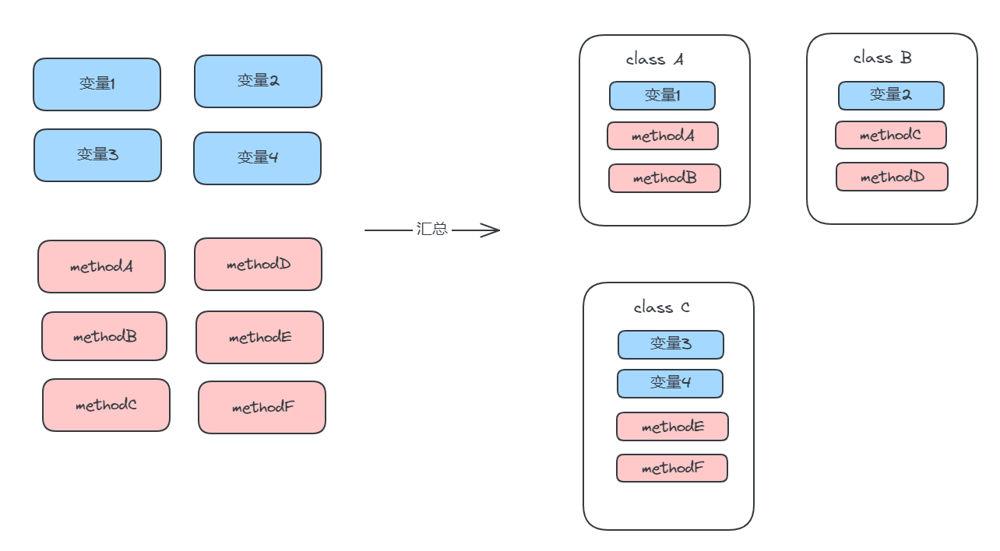
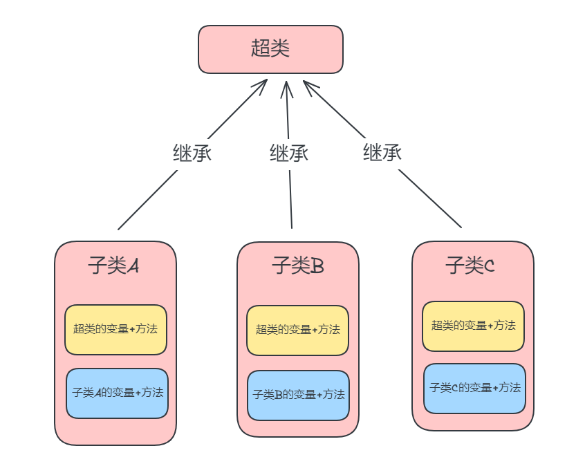
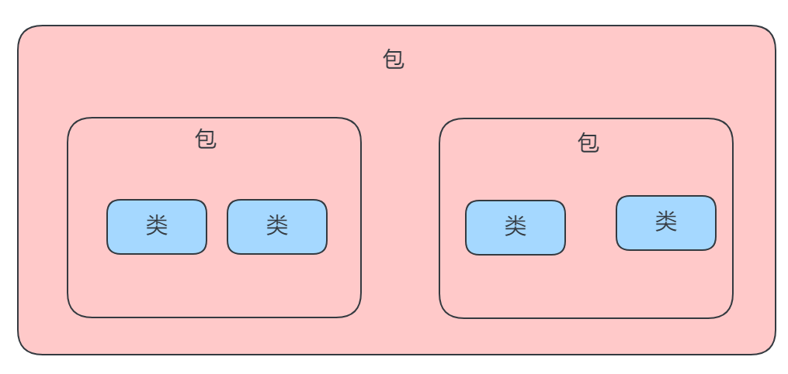
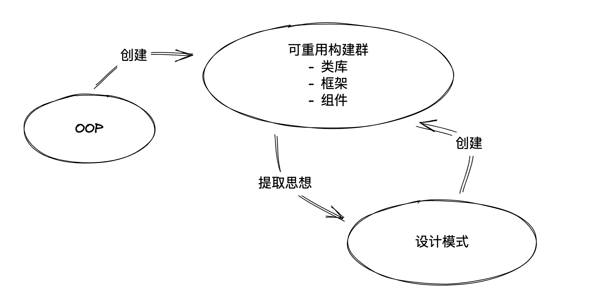
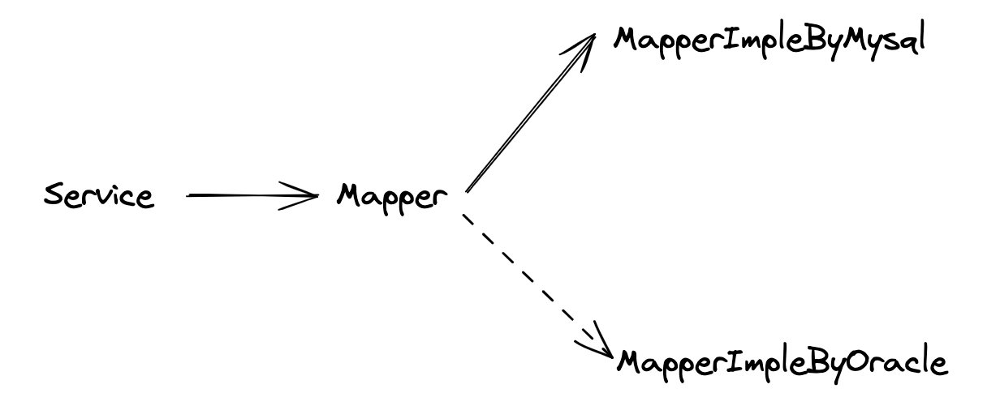
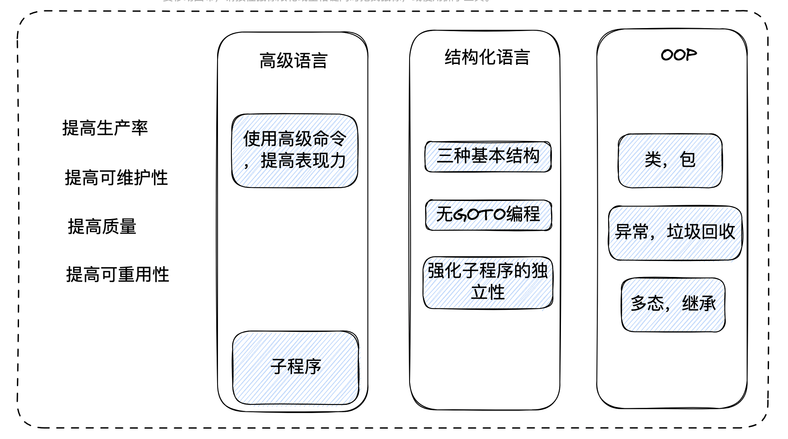

面向对象的演化过程和解决问题
面向对象的演化过程和解决问题
前言：
相信大家对面向对象这个概念已经很熟悉了，如果你是使用Java入门编程的，一定会被大量灌输：类，继承，多态的概念，但我们真的理解它们吗？一切就好像自然而然，写代码不就应该是这样吗？但事实上这些概念，只是我们脑海中的一个毫无意义的符号，当我们写一个类时，我们只是按照被教导的方式编写。好比现在最多的Web开发，业务是用户的增删改查，我们想到用户会有：name,age,gender属性。于是我们创建一个实体：
class User {
String name;
Integer age;
Integer gender;
}然后按部就班的写出Mapper(或Dao)层，Service层，Controller层，这就是MVC结构，它是如此的好用，让我们编写简单业务时十分顺手。但是当业务逐渐复杂时，我们在Service，Controller层中添加了大量的外部依赖，各种依赖注入，大量重复的代码堆砌在各个角落，一个变量被各个函数引用修改，当出现问题时，我们不得不到各个函数中查看，到底哪里出了问题，面向对象中的概念已抛到脑后。而且很糟的一点是，好像除了Web开发，想写出其他程序，便不知道从何写起了。我们的脑袋还被框架禁锢住了。
渐渐地，我们知道了设计模式这玩意儿，听说有了它，便能化腐朽为神奇，不过打开书发现，基本上都是从面向对象讲起，为什么还是它？因为它是一切的基础，面向对象就是为了解决以往混乱编程所演化的思想。所以本文会列出面向对象的演化过程，各个阶段遇到的问题，已经是如何慢慢改进的。
最早我使用Python写爬虫程序，那里只有一个py文件，没有<类，继承，多态>。只有自上而下的变量，条件，循环，网页请求，正则匹配，然后输出到控制台。但问题也能被很好的解决了。
机器语言
计算机只可以解释用二进制数编写的机器语言。并且计算机不对机器语言检查，而是飞快的执行。二十世纪四十年代，还没有现在这么多通俗易懂的编程语言。程序员必须用机器语言编写，我们看看个简单的例子，这里只是简单的算术计算。
A10010
8B160210
01D0
A10410这玩意儿没人愿意看和写吧，致敬前辈们。😭
汇编语言
为了改善机器语言的编码方式，汇编语言出现了，它将无含义的机器语言用人类易懂的符号表达，我们再改写上面的代码
MOV AX, X
MOV DX, Y
ADD AX,DX
MOV Z, AX这玩意儿大概猜一下，能看出MOV是信息传递，ADD是加法运算吧，通过这种方式，编码方式变得轻松了许多，但逐个指定计算机的执行命令也很麻烦。
高级语言
随后的高级语言采用人类更容易理解的方式进行,改写上面的代码
Z=X+Y可以看到程序的形式和数学计算公式非常相似，即使没有编程经验的人也能理解。
结构化编程
随着高级语言的出现，编程的效率和质量都在不断上升，再加上计算机的飞速发展和普及，人们对提高编程效率的需求从未止步，也就提出了各种新的思想和编程语言。
其中最受关注的是：结构化编程，核心思想是：为了编写正确运转的程序，采用简单易懂的结果是非常重要的。
而具体方式：
废除GOTO语句
在Java中我们都没听过GOTO语句，不过在C语音中还有，这是因为当年内存容量，硬件性能都很差，推崇哪怕减少一字节，或者一步也好，代码顺序执行混乱，导致维护性很差。
使用循序，选择，重复来表达逻辑
循序就是按顺序执行代码
选择就是条件判断，如if,case
重复就是重复执行某个命令，如for，while
这三种结构被称为三种基本结构，我们也可以看到现在的编程语言都遵循这样的结构。
提高子程序的独立性，强化维护性
我们都知道，如果一段代码经常重复出现，我们可以将它抽离为一个函数，进行统一调用，这样在未来修改时，也很方便。
而在当时为了强化程序的可维护性，还有另一种方法，就是提高子程序(函数)的独立性。
那该如何提高函数的独立性呢？
减少主程序与子程序共享信息，而多个子程序中共享的信息就是全局变量。所以就要尽可能减少全局变量。
为什么这么做呢？你想想这个变量谁的都能访问修改，出了问题我找谁啊！现在有了IDE开发工具，我们还算能方便点儿，但在以前的时候，编译先等着，获取执行结果再等着，再去成百上千个代码中查找问题就更费时间了。
为了解决这样的问题，人们设计了两种结构：局部变量，按值传递。
局部变量: 在函数中使用的变量，函数执行开始创建，结束时消失。
按值传递: 在传参时，不直接使用调用端引用的变量，而是复制值进行传递，这样即使函数内部进行了修改，也不会影响外界的变量。
这两种结构能将全局变量的使用控制到最小范围，减少子程序共享的信息，以此提高函数的独立性。
在结构化语言中最有名的就是C语言，它完全支持结构化编程的功能，并且能高效的操作内存，不过另一个特征就是：函数库，编程需要的功能不仅是语言规范提供，还有函数库，比如输出字符串printf。这样就能不用修改编译器，也能增加新的功能
进化方向演化为重视可维护性和可重用性
我们来一总结编程语言的进化历史吧
分为两条线：
- 从机器语言->汇编语言->高级语言，编程语言发展的更符合人类语言的方式来描述计算机执行操作，代表作：FORTRAN，COBOL。但遗憾的是仍无法满足需求
- 接下来的结构化语言就需要改变方向，即提高可维护性，无GOTO编程和提高子程序独立性都是为了程序便于理解和修改。
程序的寿命也越来越长，老的代码要被一直维护，那能看的懂，并能进行修改，就很重要了。
没有解决的问题
- 全局变量问题
- 可重用性差问题
全局变量问题是指：虽然引入了局部变量和按值传递，但当我们要将计算结构保存下来时，局部变量在函数结束时消失，所以要将结果保存到函数外部，也就又变成全局变量了。
可重用性差是指：虽然使用函数库来重用，但随着需求越来越大，仅靠函数是不够的。
面向对象编程
OOP的三种结构
这三种结构为: 类(封装)，多态，继承。也被称为OOP的三要素。
而在前面的结构化语言中我们没有解决的问题，就可以被这三种结构解决
- OOP具有不使用全局变量的结构
- OOP具有除公用子程序之外的可重用结构
需要注意虽然现在大部分语言都属于OOP，但根据编程语言的设计不同，语法差异也会不同，比如：Java和Ruby，Java中没有全局变量的概念，而Ruby中仍有保留，而且两个语言的差异也很大。
类
类的功能总结为：
- 汇总子程序和变量
- 隐藏类内部的子程序和变量
- 一个类可以创建多个实例
汇总
我们举个文件访问的例子，代码：
int fileName;
char readChar;
void openFile(String pathName) {省略};
void closeFile(){省略};
char readFile(){省略};程序由子程序和全局变量构成，而如果使用面向对象的方式进行管理就变成：
class TextFileReader{
int fileName;
char readChar;
void open(String pathName) {省略};
void close(){省略};
char read(){省略};
}可以看到这里将子程序和全局变量都汇总到一个类里了，好像没什么区别，但是汇总本身就是有意义的，就好比将散乱的东西分门别类，这样当再去寻找时，就有个范围。而且通过类的汇总，我们可以将子函数的名称变得更简洁，并且避免了命名冲突的问题。当别的类也有：open, close, read方法时，双方并不会影响。
隐藏
比如上面的代码，我们只希望类内部的方法能访问类中实例变量，外部不让动，这样就能解决全局变量的问题了
class TextFileReader{
private int fileName;
public void open() {};
public void close() {};
public char read() {};
private void someMethod() {};
}通过访问修饰符来控制变量与子函数的访问权限，可以选择公开或者隐藏。
创建多个实例
通过C语言也可以实现上面的汇总和隐藏功能，而创建多个实例则很难实现这种结构。比如上面的文件访问例子，如果只访问一个文件没有问题，那如果访问多个文件，并比较区别该怎么操作？
这里我们不需要再改成数组，来轮询访问，通过创建多个实例就可以解决这种问题。不过按照我们以前访问函数和变量的方式，当有多个实例时，该怎么区分哪个实例变量才是要处理的对象，用OOP的方式就得改为：实例名称 . 方法名(参数)，代码如下：
TextFileReader reader1 = new TextFileReader();
TextFileReader reader2 = new TextFileReader();
reader1.open("a.txt");
reader2.open("b.txt");
char ch1 = reader1.read();
char ch2 = reader2.read();
reader1.close();
reader2.close();这里我们创建了两个实例，并分别处理不同的文件，而每个方法都会访问当前实例内的变量。这样在类定义的一端，就不用担心多个实例同时运行的情况了。
实例变量是限定访问范围的全局变量
实例变量的特性：
- 能被隐藏，其他类的方法无法访问到
- 实例创建后一直保存到内存中，直到不再需要
这样就既解决了全局变量都能访问，又解决了局部变量信息无法妥善保存的问题
多态
多态是创建公用主程序的结构，与公用子程序相对应，公用子程序将被调用端的逻辑汇总为一个逻辑，而多态则相反，统一了调用端的逻辑
说的简单点儿：我创建了一个公共函数(公共子程序)，不管是谁调用这个函数，函数内不变。而多态是，不管被调用的东西内部怎么变，我都不用修改调用的代码。
我们用代码来说明一下：
class TextReader {
void open() {};
void close() {};
char read() {};
}我们创建一个公共的接口，或者说是规范，当后面读取不同东西时，统一走这里的逻辑就行
class NetworkReader extends TextReader {
// 网络文件读取
void open() {};
void close() {};
char read() {};
}class TextFileReader extends TextReader {
// 网络文件读取
void open() {};
void close() {};
char read() {};
}这里我们定义了网络文件读取和文件文件读取，当用户最初是使用网络文件读取时：
TextReader reader = new NetworkReader();
reader.open();
reader.read();当想再换成文本文件读取时：
TextReader reader = new TextFileReader(); // 只有这里修改了，其他地方完全一样！！！这样当需求变化时，只需要简单的调整，就能实现另外一套完全不同的操作
继承
继承将类的共同部分汇总到其他类中的结构。
需要注意声明继承也就声明使用多态，因此在声明继承的子类中，为了统一方法调用，继承的方法参数和返回值类型必须与超类一致。
这里可以引申出：里氏替换原则:派生类（子类）对象可以在程序中代替其基类（超类）对象。
通过这一原则，才可以实现对扩展开放，多修改关闭，当子类对父类方法进行扩展时，保证程序的兼容性，降低代码出错的可能。
上面我们介绍了OOP的三大要素：类，多态，继承。不过例如Java，Ruby，Python等比较新的编程语言提供了更先进的结构，典型的有：包，异常，垃圾回收。设计这种结构就是为了促进重用，减少错误等。我们简单介绍一下
包
说到了具有汇总功能的类结构，而包是进一步对类的汇总的结构。

不同于类，包不能定义方法和变量，但通过这种结构，也就是类似文件系统中的目录，我们可以更加轻松的组织管理。我们假设如果没有包，所有的类文件都放到根目录，一方面是命名冲突，一方面是要在大量的类中，找到具体那个，也很麻烦。
异常
在我们代码运行时，总会有各种问题出现，数组越界，空指针等等。
在没有异常时，我们可以通过返回码来表示系统运行的不同状态，比如返回200表示正常，返回-200表示数组越界，返回-300表示空指针，但这有一个问题，调用端需要根据不同的状态处理不同的情况，大量的if-else，异常处理混杂在代码中间。而且当调用端无法处理某种情况时，就必须将异常值再返回到上层，同样的异常处理在上层再写一遍。
问题:
- 必须在应用程序中执行所有的错误码判断
- 错误码的判断逻辑在多个子程序中连锁
public void doSomething() {
Integer result = reader.read();
if (result == null) {
// 对应处理
} else if (result == -200) {
// 对应处理
} else if (result == -300) {
// 对应处理
} else if (result == -400) {
// 对应处理
} else {
// 正常逻辑
}
}异常就是用于解决以上问题的结构。
异常结构会在方法中声明可能返回的特殊错误，这种特殊错误的返回方式就是异常，其语法不同于子程序的返回值。
在声明异常的方法的调用端，如果编写异常处理逻辑不正确，程序会发生错误，这就解决了第一个问题。
public void doSomething() {
try {
Integer result = reader.read();
// 正常逻辑
} catch(NullError e) {
// 执行
} catch(OutOfIndexError e) {
// 执行
}
}有时在发生错误时不执行特殊处理，而是将错误传递给上位方法，这种情况只需要在方法中声明异常，而不必编写错误处理，就解决了第二个问题。
public void doSomething() throws NullError,OutOfIndexError {
// 正常逻辑
}需要注意Java这种静态类型语言会发生编译错误提醒，而Ruby这种动态语言则是在运行时错误提醒。
垃圾回收
在说到创建多个实例时，只谈到了如何创建，但没有说如何删除，每当创建一个实例，就会为之分配内存，如果不能及时清理就会导致OOM(内存溢出)
在C和C++等之前的语言，需要显示的删除不需要的内存区域，但是就怕误删操作，或者忘了删了，需要一种机制能自动化管理，
在Java，C#等很多OOP中采用由系统自动进行删除实例的处理结构，也就是垃圾回收。这里有很多策略，比如引用计数法，标记清除法，标记整理法，推荐去看：深入理解Java虚拟机
OOP与设计模式
从历史上来说，先利用OOP创建可重用架构群，然后提取可重用构建群中的设计思想，形成设计模式，最后再利用设计模式，进一步创建可重用架构群。
设计模式原则
原则是一种抽象的概念，最初接触时很难深入理解，所以往往大家会着重于学习具体的设计模式，看代码是如何组织的。但当多观察几种设计模式后，就会发现一些通用点和策略
- 对修改关闭对扩展开放。 开放闭合原则
- 高层模块不应该依赖于底层模块，两者都应该依赖抽象。 依赖反转原则
- 尽量使用组合和聚合关系，而不是继承关系。 合成复用原则
等等，而这些就是设计模式原则，我们这里侧重于从OOP的发展历程角度来看待这些设计模式原则，看思想上是否是一致的。
单一职责原则
定义：就一个类而言，应该仅有一个引起它变化的原因
我们之前提到OOP结构解决的一个问题就是可重用性结构。
而OOP提供的类结构在设计时，就是为了将不同职责的变量和函数进行划分，这样在进行维护时，只需要找到特定的类即可。如果一个类承担的职责过多，这些职责就会耦合，当职责发证变化时，其他职责也会发生影响，这就导致的设计的脆弱性。
就好像赤壁之战中，铁索连船，一个船着火了，其他的船也被影响。
开放-封闭原则
定义: 软件实体(类，模块，函数等)应该可以扩展，但是不可修改。
有一句经典名言：拥抱变化。随着业务需求的变化，我们不得不对代码进行调整，但如果直接上手修改原有代码，在没有完整测试的情况下，很容易引入Bug。
而OOP提供的多态，继承结构就是为了解决这一问题，通过实现接口类或继承重写某些方法。这样在不修改原有功能的前提下，扩展新的功能。而通过多态，让客户端察觉不到发生的变化。
依赖倒转原则
定义：
- 高层模块不应该依赖底层模块，二者都应该依赖抽象
- 抽象不应该依赖细节，细节应该依赖抽象
我们观察一下SpringBoot在写MVC结构时，Service层是有一个接口层和实现层，Mapper层是有一个接口层和实现层。为什么需要这层接口呢？
这里一方面的原因是AOP所需的动态代理，而另一方面是SpringBoot这样设计是基于依赖反转原则的，当Controller层调用Service层时，指向的是Service接口，但具体的实现是通过ServiceImpl来做。这样双方都不需要知道具体的实现，Service层调用Mapper层也是同理的。假如我们原先是使用Mysql数据库，现在使用Oracle数据库，那我们只需要新增一个MapperImpleByOracle实现类即可。通过Spring容器的依赖注入，将代码修改范围降到最低。

里氏替换原则
定义：子类型必须能替换他们的父类型
只有当子类可以替换掉父类，软件单位的功能不受到影响时，父类才能真正被复用，而子类也能在父类的基础上增加新的行为，而这一点才使得开放-封闭原则称为可能。
而里氏替换原则是在OOP多态的基础上提出的，是对多态的一种规范。
迪米特法则(最少知识原则)
定义：如果两个类不必彼此直接通信，那么这两个类就不应该发生直接的相互作用，如果其中一个类需要调用另一个类的某个一个方法的话，可以通过第三者转发调用。
OOP中提供的类结构一个特点就是隐藏(封装)，每个类都应当尽量降低成员的访问权限。
这里举一个例子：租客，房东，中介。 当去掉中介这层当然没问题，但房东与租客直接沟通的话，成本大，且一旦一方失信或者违约，再去调整双方都要花费更多的时间，而通过引入中介，双方只需要和中介对接，如果出现问题，由中介进行调整，双方的损失也就降低了。
总结

通过面相对象的演化过程，我们能看到面向对象不是全新的概念，而是以之前技术为基础，对缺点进行补充，其中引入了新的结构来解决问题。
本文学习自：